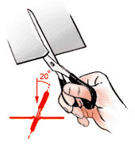
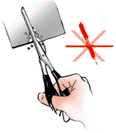

|
How to Cut TLC Plastic and Aluminum Sheets correctly?  From time to time, users have reported problems they have observed with the flaking off of parts of the layer along the cutting edges when cutting TLC plastic or aluminum sheets. This can be avoided if the right technique is used. If scissors are used for cutting the sheets, they should be held in an upright to a slightly right-inclined position during the whole cutting procedure as shown in the figure. If the scissors are inclined to the left, pronounced flaking along the cut edges might be observed. Another good method for cutting TLC sheets is to use a guillotine as used for cutting photographic prints. In this case the TLC sheet should be placed on the platform with the layer facing upwards.  On completion of the cutting procedure, loose adsorbent material from the cut edges should be removed; this is best done by gently stripping off with a thumbnail. This procedure removes capillary slits located between the layer and the support and which may cause badly distorted chromatogram tracks and peak shapes. |